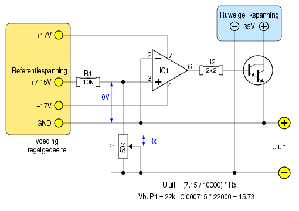
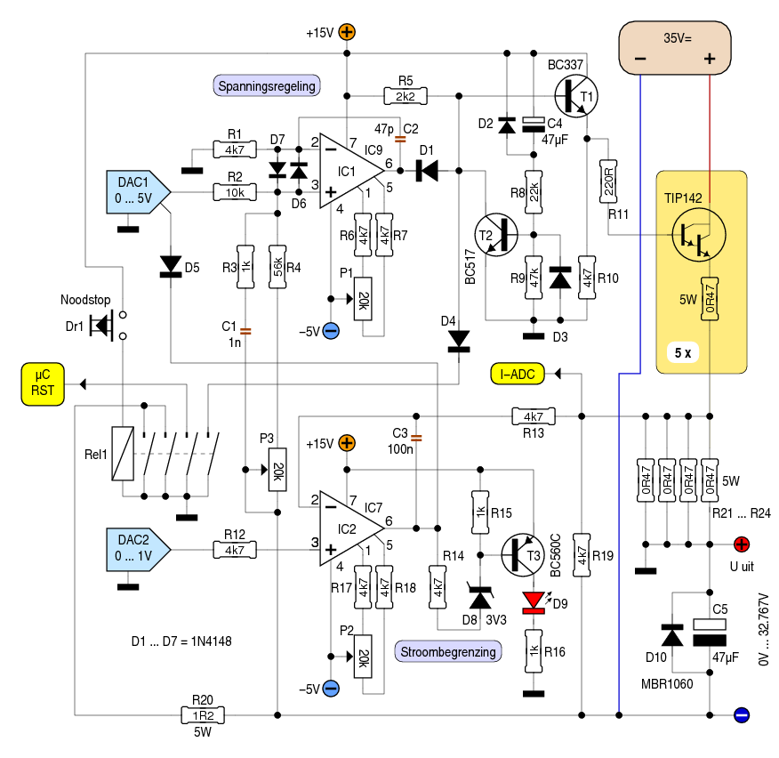
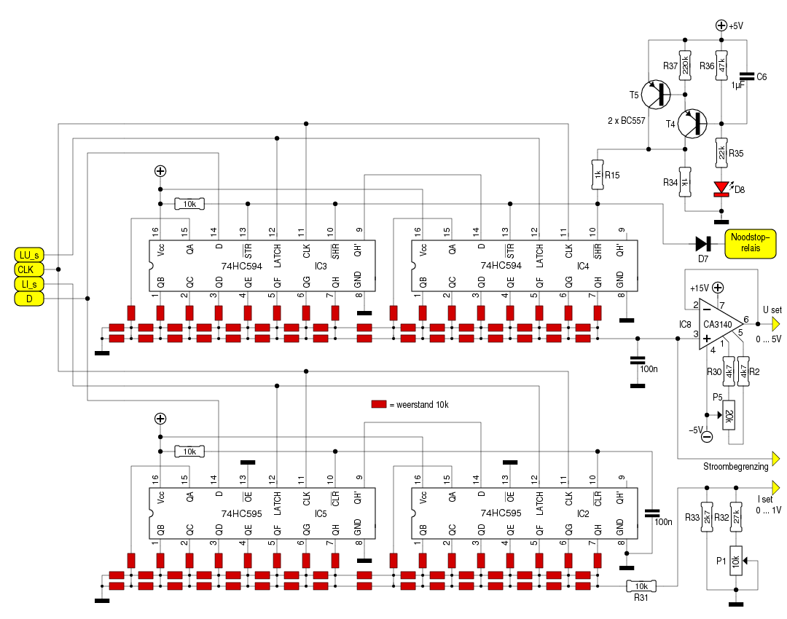
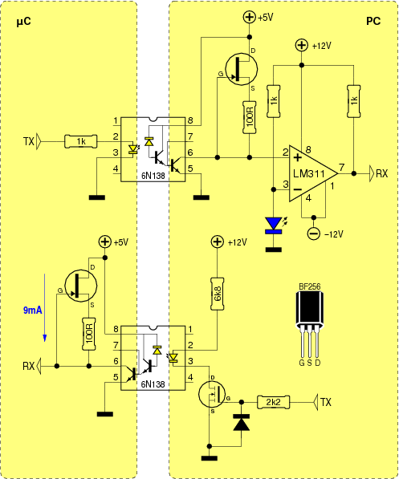

Wie enigzins bekend is met voedingen, en het getal “82” ziet staan, weet meteen waarover het gaat. In het decembernummer van 1982 publiceerde Elektuur een labvoeding die ―ondanks haar eenvoud― bijzonder goed presteert.
Bovendien is deze voeding eenvoudig aan te passen, zodat ze digitaal kan aangestuurd worden. Om te begrijpen hoe dat kan uitgevoerd worden, kan een sterk-vereenvoudigd schema meer duidelijkheid verschaffen:

Links zien we een symmetrische hulpvoeding, die tevens een stabiele referentiespanning levert. Merk op, dat de GND van deze hulpvoeding verbonden is met de positieve uitgang van de voeding.
De inverterende ingang van de opamp (IC1) is met GND
verbonden. Dat betekent, dat de opamp zijn uitgang zodanig zal
bijregelen, tot er ook op de niet-inverterende ingang 0Volt komt
te staan.
De meest-eenvoudige situatie is deze: stel P1 zodanig in, dat
zijn weerstand precies 10k bedraagt. Aan de “hete” kant van R1
staat 7.15V. De opamp zal nu T1 zodanig opensturen, dat de
uitgangsspanning óók 7.15V bedraagt. De spanningen over R1
en over P1 zijn dan gelijk, en de spanning op de
niet-inverterende ingang van de opamp is gelijk aan de spanning
op zijn inverterende ingang: 0Volt.
Verhoog de weerstand van P1 tot 20k, en de opamp zal de spanning
daarover, en tevens de uitgangsspanning, verdubbelen tot 14.3V
om de spanning op de niet-inverterende ingang op 0Volt te
brengen.
Hoe maak je daar nu een digitaal-gestuurde regeling van?
Niet door P1 te vervangen door een digitale potmeter. Digitale
potmeters die zoiets aankunnen ga je nergens vinden
Wat wèl kan, is P1 vervangen door een vaste weerstand, en de
referentiespanning instelbaar maken. Dat laatste is een
eenvoudige klus met behulp van een
DAC1.

Dit ziet er heel wat ingewikkelder uit dan het voorgaande
schema. Maar loop niet weg, het is eenvoudiger dan het lijkt.
Misschien kunnen we eerst de functie van enkele delen verklaren,
die niet rechtstreeks bij de spanningsregeling betrokken zijn.
Die kunnen we dan verder negeren.
R8, R9, C4, D2, D3 en T2 vormen samen een reset-schakeling. Ze
zorgen er voor, dat de uitgangsspanning gegarandeerd 0v is, en
dat enige tijd blijft na het inschakelen van de voeding.
Bij dat inschakelen krijgt T2 voldoende basisstroom om de basis
van T1 kort te sluiten naar GND, zodat deze de eindtrap niet kan
opensturen. Zodra C4 opgeladen is, hebben deze componenten geen
invloed meer op de voeding.
D2 zorgt er voor, dat C4 snel ontladen wordt bij het
uitschakelen van de voedingsspanning. D3 zal daarbij beletten,
dat er op de basis van T2 een negatieve spanning komt te staan.
Dr1 en Rel1 vormen samen een tweede reset.
Als er wat misloopt, is het altijd handig wanneer er een knop
voorhanden is, die de uitgangsspanning van de voeding
onmiddelijk naar 0Volt terugbrengt.
Dat is hier de taak van Dr1. Hij activeert relais Rel1, dat vier
taken vervult:
Met P1 kan een mogelijke offset-fout aan de ingangen van IC1
bijgesteld worden, zodat die de uitgang van de voeding precies
0Volt is als de uitgang van de DAC1 0Volt bedraagt.
P2 doet hetzelfde, maar dan voor IC2.
Nu kunnen we aan de eigenlijke spanningsregeling beginnen.
DAC1 levert een spanning tussen 0Volt en 5Volt. Het hoeft geen
betoog, dat die spanning stabiel moet zijn - er dient dan ook de
nodige zorg besteed te worden aan de voeding waaruit de DAC zijn
stroom betrekt.
De uitgangsspanning van DAC1 komt op de niet-inverterende ingang
van IC1 terecht.
IC1 gaat nu de basisstroom van T1 zodanig afknijpen, dat de
spanning op zijn inverterende ingang gelijk wordt aan de
spanning op de niet-inverterende ingang.
Met behulp van P3 stellen we de maximum uitgangsspanning in.
Daartoe wordt eerst de uitgangsspanning van DAC1 op 5Volt
gebracht. P3 wordt nu zodanig ingesteld, dat de uitgangsspanning
van de voeding 32767mV bedraagt. Dat lijkt een rare spanning,
tot we het hexadecimaal uitdrukken: 0x7FFF. Als we nu een
15-bits DAC gebruiken, komt 1 bit precies overeen met 1mV.
C2 moet beletten dat er tijdens het regelproces overshoot
ontstaat. Zoiets zou al snel oscillaties kunnen opleveren.
Anderzijds zorgen C1 en R3 er voor, dat IC1 afdoende kan
reageren op snelle belastingsvariaties aan de uitgang van de
voeding.
Dan zijn er nog D6 en D7. Deze dioden beletten dat het spanningsverschil tussen de ingangen van de opamp groter wordt dan 0.7Volt. Daarmee wordt voorkomen, dat dit spanningsverschil groter wordt dan hetgeen de opamp aankan.
De uitgangstrap bestaat hier uit vijf stuks TIP142, elk met een eigen emitterweerstand. Mits afdoende gekoeld, kunnen die samen zo'n 10A leveren. Men kan zondermeer eindtransistors weglaten of toevoegen, naargelang men minder of meer stroom wil kunnen afnemen.
Ook de stroombegrenzing is grotendeels gebaseerd op het originele Elektuur-artikel.
R21 ... R24 vormen samen een shuntweerstand. IC2 vergelijkt de
spanning over deze shunt met de uitgangsspanning van DAC2.
Zodra de uitgangsstroom groter wordt dan is toegestaan, grijpt
IC2 in. De manier van ingrijpen verschilt enigzins van de
Elektuur- voeding. Daar beperkte IC2 de basisstroom van T1, net
zoals IC1 doet. Ik laat IC2 de uitgangsspanning van DAC1
verlagen. Dat levert een rustiger gedrag op, maar de reactietijd
wordt wel groter.
Net als bij de spanningsregeling is er een condensator voorzien
(C3) die oscillatieneigingen moet onderdrukken.
T3 en de omringende componenten laten LED D9 oplichten, zodra IC2 actief wordt en zijn uitgang laag maakt.
De details van de sturing laat ik buiten beschouwing. Het is duidelijk, dat er een microcontroller en 2 DAC's aan te pas moeten komen. Zelf heb ik een ATmega88 gebruikt, maar ook andere μC's zijn geschikt voor de taak.
 Dan de DAC's. Wie wil, kan gebruik maken van een kant-en-klare DAC. 15-bits is ideaal, want dan kunnen we de uitgangsspanning instellen à rato van 1mV per bit. Wie tevreden is met minder, kan b.v. een 12-bits DAC gebruiken. Dat levert stappen op van 8mV, hetgeen nog steeds een bruikbare resolutie is.
Als alternatief kan met zelf een DAC samenstellen met twee schuifregisters en een handvol weerstanden, die als een R2R-netwerk geschakeld worden.
Dat ziet er dan zo uit. Belangrijk hierbij is, dat er precisie-weerstanden gebruikt worden. Ook moet er de nodige zorg besteed worden aan de voeding van de IC's.
Het deel rond T4 en T5 zorgt er voor, dat de schuifregisters hun uitgangen laag maken bij het inschakelen van de voedingsspanning.

Wie een μC gebruikt, komt al snel op het idee om er mee te communiceren via een RS232-verbinding. Het is vaak handig, commando's te geven of gegevens op te vragen met de PC.
Hier zit wel een addertje onder het gras! Vooraan in dit artikel
werd al aangegeven dat de GND van de sturing verbonden is met de
positieve uitgang van de voeding. Dat houdt in, dat ook de GND
van de μC en de GND van de RS232-verbinding daarmee verbonden
is.
En dat kan voor problemen zorgen. Stel, dat je met een scoop aan
de uitgang wil meten. De negatieve uitgang is, via de probe en
de scoop, verbonden met de aarding van het lichtnet. De
positieve uitgang is, via de RS232-verbinding en de PC, eveneens
met die aarding verbonden. Moet ik nog meer zeggen?
Gelukkig valt dat probleem eenvoudig op te lossen door een
optische koppeling aan te brengen in de RS232-verbinding:
Dat vergt slechts enkele onderdelen, maar helaas ook een afzonderlijke voeding.
Om dezelfde reden is het ook noodzakelijk, dat ―bij gebruik van een metalen behuizing― deze geen galvanisch contact maakt met de voeding!
Bij een labvoeding hoort een uitlezing. We willen immers zowel de uitgangsspanning als de uitgangsstroom kennen.
Het meten van de stroom is eenvoudig; de spanning over shuntweerstanden R21 ... R24 is immers een maat voor de stroom. Dat is een waarde die de μC kan meten en op zijn display tonen, als hij over een ADC-ingang beschikt.
De spanning is wat moeilijker. De spanning op het punt waar we
moeten meten, is immers negatief t.o.v. de GND.
Dat kan echter opgelost worden, door eerst de uitgangsspanning
te vertalen naar een spanning tussen 0Volt en -5Volt met behulp
van een spanningsdeler, en vervolgens deze spanning te voeden
aan een opamp die als inverterende 1X-versterker geschakeld
is.
Een alternatief bestaat er in, enkele kant-en-klare digitale
paneelmeters in te zetten. Dat verhoogt de kosten (ze hebben elk
een eigen voeding nodig), maar ze zijn wel nauwkeuriger dan
hetgeen met de doorsnee-ADC ingang van een μC gemeten kan
worden. Die laatste zijn doorgaans maar 10-bits.
Wat kunnen we nog meten? De temperatuur van de koelplaat
wellicht? Dat laat ons toe, actieve koeling te gebruiken en de
fan enkel aan het werk te zetten als dat echt nodig is.
Daardoor kunnen de afmetingen van de ganse voeding
teruggedrongen worden.
Daarnaast kan de μC botweg de uitgangsspanning naar 0Volt
terugbrengen, als blijkt dat de temperatuur van de koelplaat
niet meer in de hand te houden is.